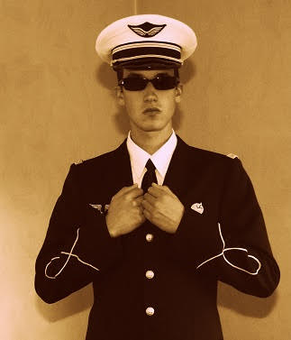
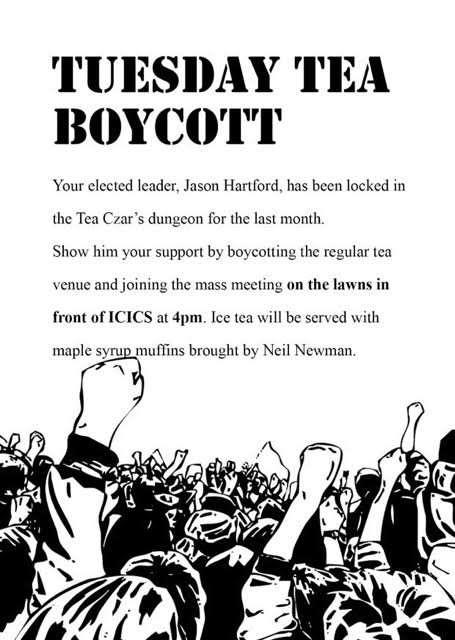
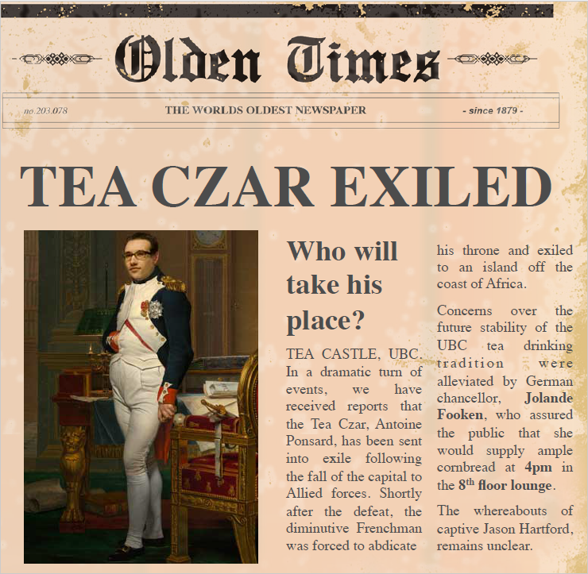
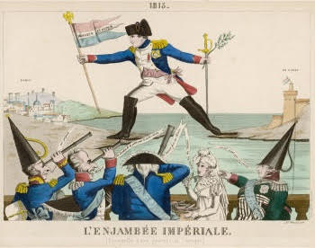
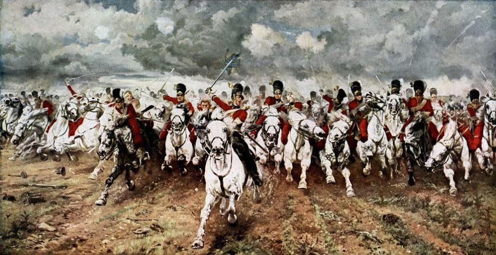

The changing of the guard
Comrades,
Today is a great day. Today we stand over the toppled dynasty of old and look forward to a new beginning. Today we write a new chapter in the history books of honourable tea drinkers. Savour this moment comrades, for one day when you’re old and sipping on a mature brew of Earl Grey, you’ll be able to recount this moment to wide-eyed grandchildren and say, “I was there! I was there at the changing of the guards... we watched the tired old frenchman bow out gracefully and hand over the reigns to a new breed of leader. I was there!"
Your old Tea Czar served you well. He worked tirelessly to ensure the kettle was always full and the tea was always brewing. But there comes a time in every great leader’s reign when things start to falter. When a joke about a tea-drinking location misses the mark. When sage life advice about bicycle theft is misinterpreted. Too many great leaders fail to notice that moment… they cling to the reigns long after they should… but you made sure that didn’t happen comrades. You elected a new leader before it was too late.
And so it is with great honour and humility that I take on this most noble of tasks.
It is fitting that this changeover shares its dates with Vaisakhi, an Indian festival celebrating Spring and the abundant harvest. Join us at 3.30 on the 8th floor where we'll feast on assorted Indian snacks and sweets brought by Prashant, and usher in a new era of prosperity.
Your Tea Czar and Comrade,
Jason
BREAKING NEWS
Today at 12pm local time, troops loyal to the former Tea Czar have taken control of key strategic locations in the CS department: Joyce Poon's office, the south elevator, and multiple printer rooms. The Tea Czar palace was stormed a few minutes later by infantry units, reportedly wearing blue and white striped shirts.
At 12:30pm, a press conference was given by Mr. Ponsard, who claimed to be the only legitimate Tea Czar. He argued that the election held a few weeks ago was a "masquerade", since there was only one candidate (Mr. Hartford). Mr. Ponsard promised that free and fair elections would be organised "at some point in the future". Until then, Tuesday tea will "take place as usual" on Tuesdays at 3:30pm, in X836, and people will have "a lot of fun". Mr. Ponsard also indicated that he was looking into "refined and improved techniques" to bring a larger audience to Tuesday Tea.

Mr. Ponsard, at today's press conference.
The fate of M. Hartford remains unclear. El Tea Czar assured that "no harm would come to the usurper". However, some journalists raised concern, citing an earlier comment of Mr. Ponsard about introducing more gender diversity for this position. Unfortunately these journalists could not be reached at the time of writing this article.


The Empire Strikes Back
The Tea Czar has returned from his exile on the cold and damp island of Nouvelle-Écosse. He appears to have landed in Vancouver three days ago, and since then has been joined by enough loyal supporters to regain control of Tuesday Tea without firing a single shot.
Speaking in front a large crowd, he announced his intention to reign "for a hundred days". To celebrate his return, Mr. de Prachante is organizing a distribution of (banana) bread to the good people of the CS department, today at 4pm in the 8th floor lounge.
Mr. Hartford decided he would rather flee than be thrown again in the dungeons. On the boat that was taking him to safety, he turned back towards the shore and said, with an understandable bitterness in his voice: "I shall return".

The Fight of the Century

Too much electronic ink has been spilled in the past months over who would take over the coveted Tuesday Tea czarship. Nothing can seem to bring the loyalists of M. Hartford and the imperialists of M. Ponsard together, except a long dreary plain and a collection of swords and guns. Both sides have gathered their strength for an ultimate battle, which will take place today,
June 16 2015 at 4pm, in the Waterloo lounge on the 8th floor.
Neil Traft will feed the combatants with his blueberry zucchini bread, world-famous in America.
Ave CS, morituri te salutant!